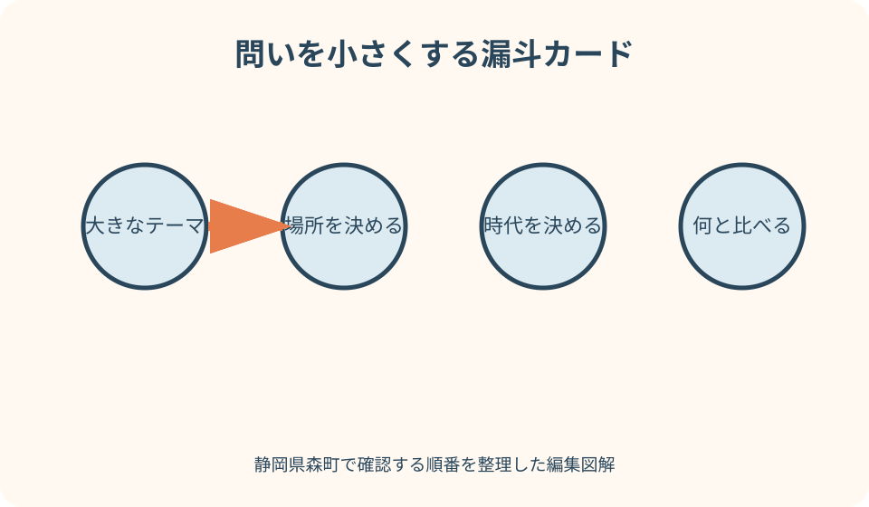
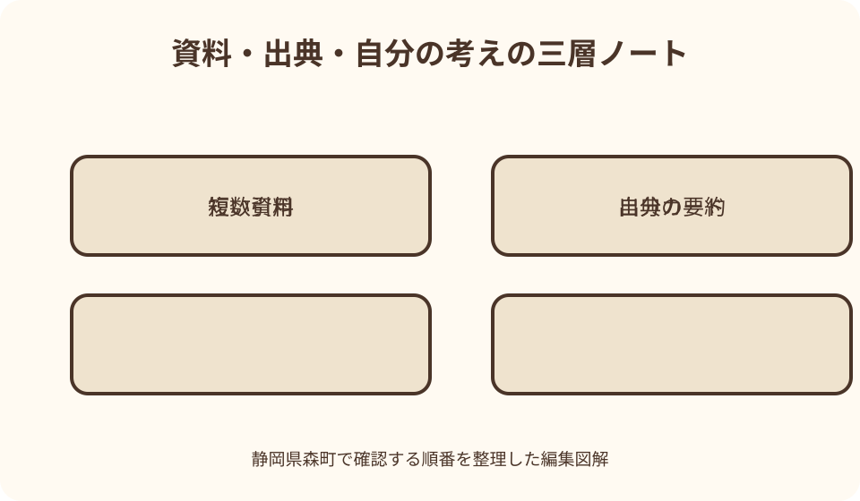

学校・就学・家庭記録｜最終確認 2026-08-10
静岡県森町で子どもの調べ学習｜図書館・出典・要約の進め方
調べ学習は、集めた情報の多さを競う作業ではありません。子どもが自分の疑問を一つの問いに変え、資料を探し、違いを確かめ、根拠を示して自分の考えをまとめる学びです。森町立図書館の図書検索コーナーや児童図書、郷土資料を使いながら、親と司書が答えを奪わず支える順番を具体化します。

編集イラスト調べ学習は答え探しではなく問いを育てる作業
自由研究で『森町について調べる』と決めても、範囲が広すぎて資料を写すだけになりがちです。最初の一歩は、興味のある出来事を一つ選び、いつ、どこで、誰が、何を、なぜ、どのようにのうち、答えを確かめたい言葉を一つ置くことです。
例えば『森町のお茶』なら、『町内ではどのような場所で茶が育てられているか』『昔と今で作業はどう変わったか』まで狭めます。結論を先に決めず、資料を読んだ後に問いを直してよいと子どもへ伝えます。
良い問いは、一冊の百科事典の一行だけでは終わらず、複数の資料を比べられる大きさです。一方で『日本の農業を全部調べる』ほど広くしません。調査期間と学年に合わせ、一週間で確かめられる範囲へ切ります。
親は『この答えを書けばよい』と教えるのではなく、『その言葉はいつのことか』『森町のどの場所か』『何と比べたいか』と問い返します。問いを作った本人が、最後に何が分かったかを説明できる状態を目指します。
課題の条件を先に読み違えない
学校の課題には、文字数、用紙、締切、対象となる教科、使う資料の数、写真の扱い、発表方法が示されることがあります。調査を始める前に、子どもが条件を読み上げ、分からない点を先生へ確認する欄を作ります。
自由研究、読書感想、レポート、新聞づくりでは目的が違います。本の感想を書く課題で統計だけを集めたり、観察が必要な課題をウェブの転載で済ませたりしないよう、提出物が求める行動を一文にします。
締切から逆算して、問いを決める日、図書館へ行く日、追加資料を探す日、下書き、見直しを分けます。貸出中や休館で資料が見つからない可能性を考え、提出前日を最初の来館日にしません。
学校が引用や参考文献の書き方を指定している場合は、その形式を優先します。本稿の記録項目は資料を見失わないための土台であり、学級や学年の提出規則を置き換えるものではありません。
一つの疑問を三つの検索語へ変える
問いが決まったら、文章のまま検索欄へ入れる前に、中心語、場所、時代や比較対象へ分けます。『森町の川の生き物が季節で変わるのはなぜ』なら、『森町』『川』『生き物』『季節』を出発語にします。
同じ意味の言葉や、広い言葉と狭い言葉も並べます。『ホタル』だけでなく『蛍』『水生昆虫』『生息環境』、『昔』だけでなく具体的な年代を候補にすると、書名や目次に使われる表現へ近づけます。
検索結果が多すぎる場合は場所や年代を追加し、少なすぎる場合は専門語を一つ外します。見つからないことを『資料が存在しない』と結論づけず、言葉を変えて再検索し、司書へ試した語を見せます。
検索語の表には、入力した言葉、見つかった件数、役立ちそうな書名、次に試す言葉を残します。同じ検索を親子で何度も繰り返さず、どの言葉から資料へたどり着いたかも成果の一部にします。

森町立図書館で資料の入口を見つける
森町公式の設備案内によると、森町立図書館には一般図書、児童図書、新聞、雑誌、視聴覚資料があり、図書検索コーナーで蔵書や資料を検索できます。研究や学習の場として利用できることも明記されています。
来館前には、開館日や利用条件を最新の図書館案内で確かめます。町公式ページに載る取扱時間や休館情報は更新され得るため、過去の広報紙や個人ブログの数字だけで当日の利用を決めません。
館内検索では、一件目の本だけを選ばず、件名、分類、請求記号、著者、出版年を見ます。似た番号の棚に関連資料が並ぶことがあるため、検索結果の書名を探した後、同じ棚の前後も確認します。
児童図書コーナーは読みやすい入口ですが、学年別に答えが固定されているわけではありません。写真の多い本で全体をつかみ、必要に応じて事典、一般向けの本、郷土資料へ広げ、分からない語はその場でメモします。
本の目次・索引・奥付を別々に使う
本を最初のページからすべて読む前に、目次で問いに関係する章を探します。章題が広いときは索引から固有名詞や専門語を引き、該当ページの前後を読んで、説明の条件や例外を落とさないようにします。
百科事典や図鑑は、基本語の意味と次の検索語を得る入口です。それだけでレポートを完成させず、事典に出てきた人名、地名、現象名を使って、より詳しい本や公式資料へ移ります。
奥付では、書名、著者や編者、出版者、版、出版年を確認します。表紙の題名だけを撮影すると、後で同名の本を区別できません。使ったページ番号と一緒に、その場で調査カードへ書きます。
古い本が役立たないとは限りません。昔の森町の様子を調べるなら当時の資料が重要です。ただし現在の人口、施設、制度、自然環境を答えるときは、出版年を確認し、新しい公式情報と区別します。
郷土資料で森町固有の情報へ近づく
森町の地名、祭り、産業、学校、川、昔の暮らしを調べるとき、全国向けの本だけでは町内の細部が見つからないことがあります。図説森町史、町の略年表、広報紙、統計、文化財資料など、町公式の文化情報も検索候補にします。
郷土資料は、現在の出来事をすべて網羅する資料ではありません。発行年、編者、対象期間を確認し、『この資料には何年まで書かれているか』を調査カードへ残します。後の変化は別資料で補います。
祭りや伝承を扱う場合、地域で語られる話と、史料から確認できる事実を同じ文に混ぜません。『資料にはこう記される』『聞き取りではこう語られた』と出どころを分けると、どちらも大切に扱えます。
町のウェブページに略年表や文化情報があっても、引用元や更新日まで見ます。紹介文をそのまま写すのではなく、図書館の本や資料館の案内と照らし、同じ出来事がどの範囲で説明されているかを比べます。
複数資料は数ではなく役割を変える
二冊使うという条件を満たすため、同じ説明をする子ども向け本を二冊写すだけでは比較になりません。全体を知る事典、詳しい理由を説明する専門書、地域の事実を示す町資料、現在を示す公式ウェブというように役割を変えます。
資料ごとに、答えたこと、答えなかったこと、発行年、対象地域、書いた人や機関を表へ置きます。同じ言葉でも全国の傾向と森町の事例では範囲が違うため、一致しないことをすぐ誤りと決めません。
数字が異なるときは、調査年、単位、対象、集計方法を確認します。人口なら町全体か地区か、年間値か特定月かを見ます。条件が違う数字を平均したり、都合のよい方だけを選んだりしません。
資料同士が食い違ったら、その違い自体を問いにできます。『資料Aは何年、資料Bは何年で、対象が違うため結果が異なる可能性がある』と書けば、無理に一つへ決めるより調査過程が伝わります。
司書には答えではなく探した過程を伝える
探しても本が見つからないときは、カウンターで『自由研究の答えを教えてください』ではなく、問い、学年、すでに試した検索語、見た棚、必要な期限を伝えます。司書が資料を探すための手掛かりが具体的になります。
『森町の虫』のように広い相談なら、知りたい虫、場所、季節を一緒に絞ります。質問がまとまっていなくても、関心のきっかけと分からないことを子ども自身が話し、保護者は必要なときだけ補います。
資料が館内にない場合、別の検索語、近いテーマ、所蔵に関する相談ができるか尋ねます。取り寄せや複写などの対応は資料と利用条件で異なるため、利用できると決めつけず図書館の案内を確認します。
司書が示した資料名と探し方も調査記録へ残します。ただし司書の説明を出典の代わりにせず、実際に資料を開き、どのページが問いに関係するかを子どもが判断します。
出典カードは資料を開いている間に作る
本の出典カードには、書名、著者・編者、出版者、出版年、使ったページを書きます。ウェブはページ名、運営者、URL、閲覧日を記します。後でまとめて思い出そうとすると、写真と本文の対応が分からなくなります。
一枚のカードには、一つの資料から分かったことを一つずつ書きます。カード右上へ問いの番号を付けると、どの疑問に使う情報か整理できます。分からない語や追加で確かめる点は、答えと別の色で残します。
写真を撮れる場合も、館内ルールと著作権への配慮が必要です。撮影できると一律に考えず、必要ならカウンターへ確認します。画像を保存しても、書誌情報とページ番号を文字で残します。
返却前には、本文へ使った箇所とカードを照合します。ページを間違えていないか、説明の前提を切り落としていないか、図表の単位があるかを見直し、確認できない情報には印を付けます。
引用と要約を見た目でも分ける
引用は、資料の言葉を必要な範囲でそのまま示す方法です。かぎ括弧や引用部分が分かる形にし、直後に出典とページを付けます。長い段落をそのまま写して自分の文章の中心にしません。
要約は、語尾だけを変える作業ではありません。段落を読み、いったん本を閉じ、『誰が、何を、なぜ』を自分の言葉で一文にします。その後、元の説明と意味がずれていないか開き直して確認します。
本の言葉を少し並べ替えただけなら、子どもが意味を説明できないことがあります。保護者は文章を直す前に、『この一文を口で説明して』『資料のどこから分かったの』と尋ね、理解できていない部分を再読させます。
引用した事実と子どもの考えは段落を分けます。『資料ではこう示される。私は観察結果と比べてこう考えた』と書けば、他人の説明を自分の発見のように見せず、考察の位置が明確になります。

インターネット情報は運営者と更新日を見る
検索結果の上位に出たページが、調べ学習に最も適した根拠とは限りません。まず誰が運営しているかを見ます。森町の制度や施設は森町公式、国の統計や仕組みは担当省庁、交通は運行事業者というように一次情報へ戻ります。
ページ名、URL、運営者、公開日や更新日、閲覧日を記録します。更新日が見つからない場合は、その事実もカードに書き、現在の状況を断定する資料として使うか慎重に判断します。
個人ブログや動画は、疑問を見つけたり検索語を増やしたりする入口にはなります。しかし体験した日、撮影場所、根拠が不明なら、森町全体の事実としてまとめません。公式資料や本で確かめられた範囲を分けます。
生成AIの回答も出典そのものにはしません。示された書名やURLが実在するか、本文に本当に書かれているかを開いて確認し、課題で利用が認められているかを学校の指示へ戻します。子どもが説明できない文章を提出しません。
観察・聞き取りを本の情報と混ぜない
自然、商店、地域行事などを調べるときは、自分の観察や聞き取りも資料になります。観察日、場所、天候、方法を記録し、一回見た結果を一年中の傾向や町全域の事実へ広げません。
人へ話を聞く場合は、目的を伝え、記録や掲載の可否を確認します。氏名を載せない約束なら守り、子どもの判断だけで住所、電話番号、顔写真など個人を特定できる情報を公開しません。
聞いた内容は『いつ、どの立場の人から、何について聞いたか』を示し、本に書かれた事実と分けます。記憶違いや立場による見方の差があり得るため、一人の話を地域全員の意見として扱いません。
観察と本が一致しない場合、どちらかを消すのではなく、季節、場所、条件の違いを考えます。『本は一般的な特徴、観察はこの日のこの場所』と範囲を示せば、違いが考察の材料になります。
保護者は段取りを支え文章を奪わない
低学年の子どもには、来館日を決める、検索画面の操作を手伝う、難しい漢字を読む、カードの枠を作る支援が必要です。それでも、どの疑問を選ぶか、どの資料が面白いか、何が分かったかは本人に話してもらいます。
保護者が文章を整えすぎると、子どもの理解と提出物の表現が離れます。誤字をすべて直す前に、意味が通るか、根拠があるか、引用と自分の考えが分かれるかを質問し、本人が書き直す時間を取ります。
検索結果が出ないときも、親が完成資料を渡すのではなく、別の検索語を一緒に三つ考えます。司書へ相談するときは子どもが最初の一文を話し、親は学年や締切など不足情報を補足します。
安全と個人情報は大人が責任を持ちます。現地調査の移動、川や山への立入り、夜間の観察、ウェブへの写真掲載は、学校の指示、管理者のルール、天候を確認し、調査のために危険を冒しません。
下書きは問い・根拠・考えの三列から作る
いきなり清書せず、左から問い、資料で分かったこと、自分の考えの三列を作ります。出典カードを根拠の列へ並べると、資料の写しだけで考えが空欄の箇所や、考えはあるのに根拠がない箇所が見えます。
構成は、調べようと思った理由、問い、調べ方、分かったこと、資料の違い、考えたこと、残った疑問の順にすると過程が伝わります。すべての資料を紹介するのではなく、問いへ答える根拠を選びます。
図や表を作るときは、単位、対象、調査年、出典を付けます。資料の図表をそのまま装飾として貼らず、必要な数値を理解して、自分で比較表へ整理できるかを確認します。転載の可否も学校と資料の条件へ戻します。
最後に、本文中で使った資料が参考文献一覧にあり、一覧の資料が本文のどこかで役立っているかを照合します。読んでいない本を数を増やすために載せず、使ったページを説明できる状態にします。
良い点
森町立図書館で調べ学習を進める良い点は、子ども向けの本から一般書、新聞、雑誌、郷土資料へ一つの問いを広げられることです。検索語が分からなくても、棚と司書への相談から別の入口を見つけられます。
複数資料を比べると、答えが一つではない場面に気づけます。出版年や対象地域の違いを見つける経験は、インターネット上の情報をそのまま信じず、条件を読む力につながります。
出典カードを作る習慣は、提出物のためだけではありません。後日同じテーマを深めるとき、どの本のどのページを見たか再確認でき、家族が代わりに検索し直す手間も減らせます。
司書へ相談する経験は、『知らないことを質問してよい』と学ぶ機会です。答えをもらうのではなく、資料の探し方や分類の見方を教われば、次の調べ学習で子ども自身が再現できます。
注文したい点
利用者として注文したいのは、初めての子どもが、館外から蔵書、利用条件、休館、相談方法を一続きで確認できる案内です。現状では町公式の施設案内や設備案内など複数ページを見るため、閲覧日をそろえて確認します。
館内の図書検索コーナーがあることは町公式で分かりますが、検索語、件名、請求記号を子ども向けに試せる説明がさらに見つけやすいと、来館前の準備が進みます。分からない操作は推測せずカウンターへ尋ねます。
学校からも、参考文献の書き方、ウェブや生成AIの扱い、保護者が手伝える範囲を課題ごとに示してもらえると、家庭での代筆を防ぎやすくなります。指定がなければ提出前に先生へ確認します。
図書館に求める支援と、学校が評価する学習成果は同じではありません。司書が資料を案内しても、問いを選び、読み、比較し、文章にするのは子どもの役割です。支援を受けたことも調査過程として誠実に記します。
代案・結論
目的の本が貸出中なら、同じ分類の棚、事典、別の検索語、町公式資料を順に試し、司書へ所蔵や利用方法を相談します。特定の一冊がないことを理由に調査を止めず、問いを少し狭める方法もあります。
図書館へすぐ行けない場合は、学校図書館、森町公式、国立国会図書館のリサーチ・ナビなどから資料名と検索語を準備します。ウェブだけで清書せず、来館できた時点で本の説明と比べます。
調査時間が足りない場合、テーマを広げるのではなく問いを一つへ絞ります。三つの浅い答えより、一つの疑問について二つ以上の資料を比較し、分からなかったことまで書く方が、子どもの調査過程を示せます。
結論は、森町立図書館へ行けば答えが完成するということではありません。問いを小さくし、検索語を試し、役割の違う資料を比べ、出典を記録し、引用と要約を分けて初めて、子ども自身の学びとして形になります。
大石の視点
大石の視点で調べ学習を見ると、価値があるのは見栄えのよい完成品より、どの一次情報へ戻ったかを説明できる記録です。森町の土地、祭り、産業を扱うときも、うわさと資料を分ける姿勢が地域を丁寧に伝えます。
森町の家や昔の地名を調べるテーマでは、家族の記憶だけで結論を作らないことが大切です。郷土資料、地図、町史、聞き取りを別のカードにし、年代と場所が一致する範囲だけをつなぎます。
不動産の仕事でも、資料名、発行者、基準日を確かめずに判断すれば、昔の状態と現在を取り違えます。子どものうちに出典を残す習慣を身につけることは、暮らしの重要な選択で事実を確かめる力にもつながります。
親が正解を渡すと提出は早く終わりますが、次の問いでまた親を待つことになります。検索語を考えた跡、見つからなかった本、司書へ聞いた内容まで残し、子どもが自分で一歩進めた部分を成果として認めます。
返却前と提出前の最終確認
返却前には、使用した全資料の奥付、ページ、図表の単位を出典カードと照合します。付箋や私物を挟んだままにせず、館内の資料を汚したり書き込んだりしていないかも確認します。
提出前には、問いに対する答えが本文にあるか、根拠が二つ以上あるか、資料と自分の考えが分かれているかを子どもが声に出して読みます。説明できない言葉は、簡単な表現へ直すか再度調べます。
保護者は誤字だけを直して完成稿を作らず、『この出典はどの文に使ったか』『二冊の違いは何か』『残った疑問は何か』を聞きます。子どもが答えられれば、調査の筋道が自分のものになっています。
今日行うことは、課題用紙から条件を三つ抜き出し、関心のある大きなテーマを一つの問いへ縮め、検索語を三組書くことです。その紙を持って森町立図書館の検索コーナーとカウンターを利用してください。
公式情報・確認先
掲載内容は次の一次情報を基礎に整理しました。営業、料金、催し、交通は変わるため、出発前または手続き前にリンク先で最新情報を確認してください。
- 森町立図書館（設備案内）（静岡県森町、2026-08-10確認）
- 図書館（静岡県森町、2026-08-10確認）
- 観光・文化（静岡県森町、2026-08-10確認）
- 森町立図書館 指定管理業務仕様書（静岡県森町、2026-08-10確認）
- リサーチ・ナビ（国立国会図書館、2026-08-10確認）
- 調べもののお手つだい（国立国会図書館国際子ども図書館、2026-08-10確認）
- 学校図書館の位置付けと機能・役割（文部科学省、2026-08-10確認）
- 学校図書館ガイドライン（文部科学省、2026-08-10確認）